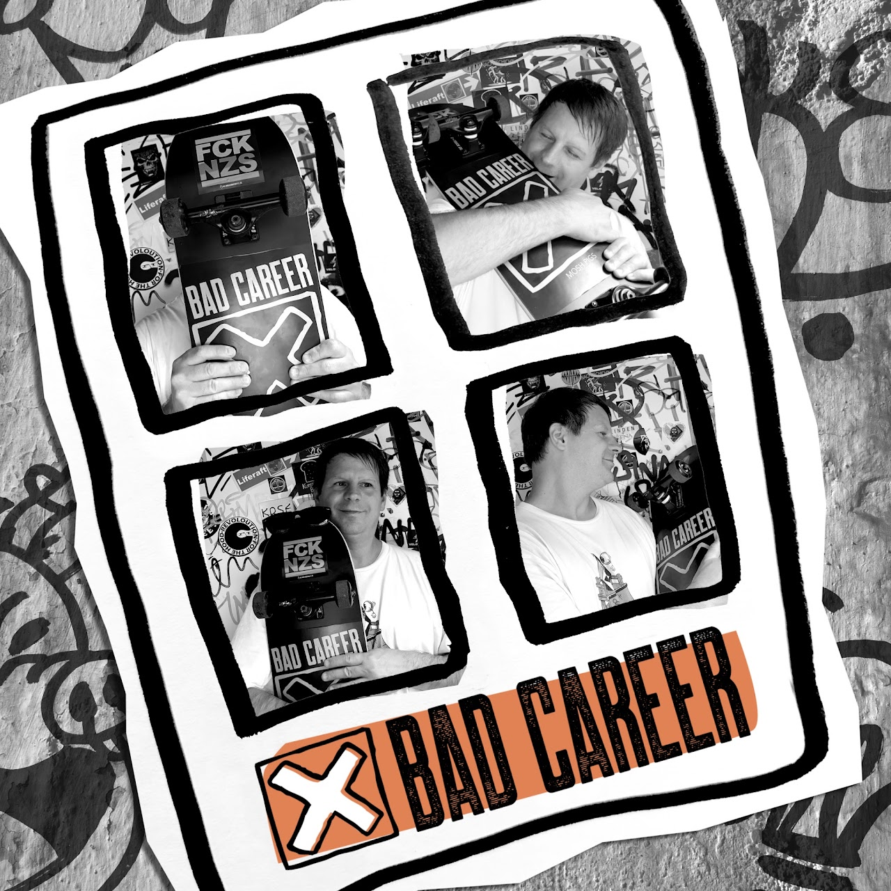

Vorab gehört
BAD CAREER - Moshpigs

Hinweis: Moshpigs erscheint offiziell am 4. September 2026. Song und Video wurden RandaleFUNK vorab zur Verfügung gestellt.

BAD CAREER haben mir „Moshpigs“ vor der Veröffentlichung geschickt.
Fünf Sekunden zum Warmwerden.
Dann geht es ohne Vorwarnung los: melodischer Skatepunk, dazu Hardcore-Shouts.
Voll in die Fresse.
Trotz der Shouts bleibt genug Melodie drin, damit das Ding nicht einfach nur nach Hardcore durchprügelt. Nils brüllt darüber mit genau der Wut, die der Text braucht.
Bei dieser Mischung muss ich kurz an die alten Evergreen Terrace denken: melodische Gitarren, darüber Hardcore-Shouts.
Die Band bezeichnet „Moshpigs“ ausdrücklich als antifaschistische Ansage gegen Nazis und ihren Hass. Im Text nennen sie sich selbst die Moshpigs und kündigen den Parolenschreibern an, ihnen Stöcke zwischen die Speichen zu schieben.
Oder direkt aus dem Text:
„We put spokes in your wheels.“
Dass man so etwas 2026 wieder so deutlich sagen muss, nervt schon genug. Klare antifaschistische Kante gehört wieder hörbar nach vorn.
BAD CAREER halten die Sache trotzdem nicht eine Minute lang in finsteren Schwarz-Weiß-Bildern fest. Das Video, das zusammen mit dem Song erscheint, zeigt Sommer, Skateboards, kräftige Farben und ein Schwein, das deutlich mehr Auslauf bekommt als viele Menschen bei diesem Tempo verkraften würden.
Und aus der Wall of Death machen BAD CAREER gleich noch eine „wall of mud“.
Moshpigs eben.
Politischer Punk darf also auch bei Sonne und auf Skateboards stattfinden.
Der deutlichste Hinweis steckt in einer kleinen Szene: Zu sehen ist Leander Mielaus „Das Anti-AfD-Handbuch – Widerstand im Alltag: lokal, kreativ, wirksam“.
Das Buch verbindet den sonnigen Skatetag mit dem politischen Inhalt, ohne dass anschließend noch jemand erklärend in die Kamera reden muss.
Ich mag solche Kleinigkeiten. Da hatten Leute nicht nur Lust auf einen schnellen Song, sondern auch auf das Video und das, wofür beides steht.
BAD CAREER waren mir bis zu dieser Mail völlig unbekannt.
Jetzt muss ich mir den restlichen Kram auch noch anhören.
Danke für nichts.
„Moshpigs“ erscheint am 4. September 2026.
Folgt BAD CAREER und schaut euch an, was die sonst noch veranstalten:
BAD CAREER - Website
BAD CAREER auf Instagram
BAD CAREER auf YouTube